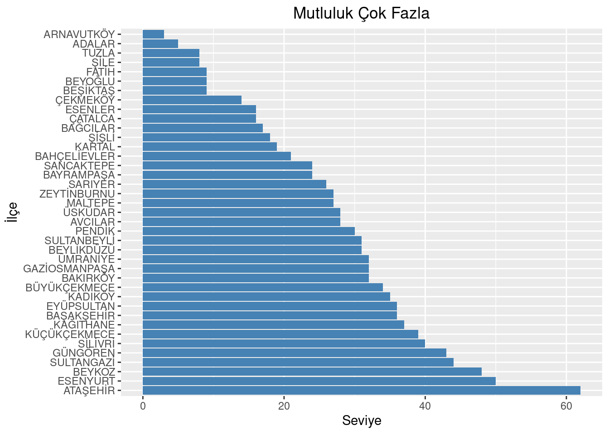

Cem Deniz SAYINER, I have been working as a Senior R&D Engineer at ISBAK for 3 years. I possess 8 years of experience in software development, with the last 3 years focused on developing software for AI-Based Video Analytics Systems. I am enthusiastic about utilizing cutting-edge technology and open to new experiences in different fields that will help me expand my horizons.
It’s allways difficult to print out dataframe to console because default console print out is not enough to see details of dataframe.
library(dplyr)
Attaching package: 'dplyr'
The following objects are masked from 'package:stats':
filter, lag
The following objects are masked from 'package:base':
intersect, setdiff, setequal, union
library(ggplot2)diamonds
# A tibble: 53,940 × 10
carat cut color clarity depth table price x y z
<dbl> <ord> <ord> <ord> <dbl> <dbl> <int> <dbl> <dbl> <dbl>
1 0.23 Ideal E SI2 61.5 55 326 3.95 3.98 2.43
2 0.21 Premium E SI1 59.8 61 326 3.89 3.84 2.31
3 0.23 Good E VS1 56.9 65 327 4.05 4.07 2.31
4 0.29 Premium I VS2 62.4 58 334 4.2 4.23 2.63
5 0.31 Good J SI2 63.3 58 335 4.34 4.35 2.75
6 0.24 Very Good J VVS2 62.8 57 336 3.94 3.96 2.48
7 0.24 Very Good I VVS1 62.3 57 336 3.95 3.98 2.47
8 0.26 Very Good H SI1 61.9 55 337 4.07 4.11 2.53
9 0.22 Fair E VS2 65.1 61 337 3.87 3.78 2.49
10 0.23 Very Good H VS1 59.4 61 338 4 4.05 2.39
# ℹ 53,930 more rows
But with dplyr package we can print out dataframe to console with tibble format. Easy to read and see details.
as_tibble(diamonds)
# A tibble: 53,940 × 10
carat cut color clarity depth table price x y z
<dbl> <ord> <ord> <ord> <dbl> <dbl> <int> <dbl> <dbl> <dbl>
1 0.23 Ideal E SI2 61.5 55 326 3.95 3.98 2.43
2 0.21 Premium E SI1 59.8 61 326 3.89 3.84 2.31
3 0.23 Good E VS1 56.9 65 327 4.05 4.07 2.31
4 0.29 Premium I VS2 62.4 58 334 4.2 4.23 2.63
5 0.31 Good J SI2 63.3 58 335 4.34 4.35 2.75
6 0.24 Very Good J VVS2 62.8 57 336 3.94 3.96 2.48
7 0.24 Very Good I VVS1 62.3 57 336 3.95 3.98 2.47
8 0.26 Very Good H SI1 61.9 55 337 4.07 4.11 2.53
9 0.22 Fair E VS2 65.1 61 337 3.87 3.78 2.49
10 0.23 Very Good H VS1 59.4 61 338 4 4.05 2.39
# ℹ 53,930 more rows
Also we can use View() function to see dataframe in new window. It’s more useful than console print out.
View(diamonds)
And the best part with dplyr package is we can use pipe operator “%>%” to chain functions. It’s more readable and easy to use.
diamonds$x %>%round(2) %>%mean()
[1] 5.731157
Otherwise we should use nested functions like this. It’s not readable and easy to use.
d2 <-round(diamonds$x,2)mean(d2)
[1] 5.731157
4 Dataset
Veriye Dayalı Yönetim Modeli Araştırması
About Dataset
“The aim of the research on the Data-Driven Management Model in Istanbul is to generate data that will serve as the basis for strategies in investments and services by determining the general sociodemographic and socioeconomic profile, needs, and tendencies of the Istanbul population. For this purpose, face-to-face interviews were conducted using the survey method with 50,000 households across the city. The number of surveys was distributed proportionally to the household numbers in each neighborhood, ensuring a minimum of 12 surveys per neighborhood. To ensure the representation of Istanbul in the study results, households for interviews were selected using a layered random sampling method at the neighborhood level.”
This link contains multiple datasets that can be merged for in-depth analysis. Additionally, the sample dataset is available at the provided link.
Sample Dataset: VDYM İlçe Bazında Hanelerdeki Duygu Durum
library(readxl)library(dplyr)library(ggplot2)emotion <-read_excel("datas/1-vdym-ilce-baznda-hanelerdeki-duygu-durum-istatistikleri.xlsx")area <- emotion$`İlçe`%>%as.factor()# ordered by "Mutluluk_Çok Fazla"area <-reorder(area, -emotion$`Mutluluk_Çok Fazla`)# plotggplot(emotion, aes(x = area, y =`Mutluluk_Çok Fazla`)) +geom_bar(stat ="identity", fill ="steelblue") +coord_flip() +labs(title ="Mutluluk Çok Fazla", x ="İlçe", y ="Seviye") +theme(plot.title =element_text(hjust =0.5))

area <-reorder(area, -emotion$`Mutluluk_Çok Az`)#plotggplot(emotion, aes(x = area, y =`Mutluluk_Çok Az`)) +geom_bar(stat ="identity", fill ="steelblue") +coord_flip() +labs(title ="Mutluluk Çok Az", x ="İlçe", y ="Seviye") +theme(plot.title =element_text(hjust =0.5))